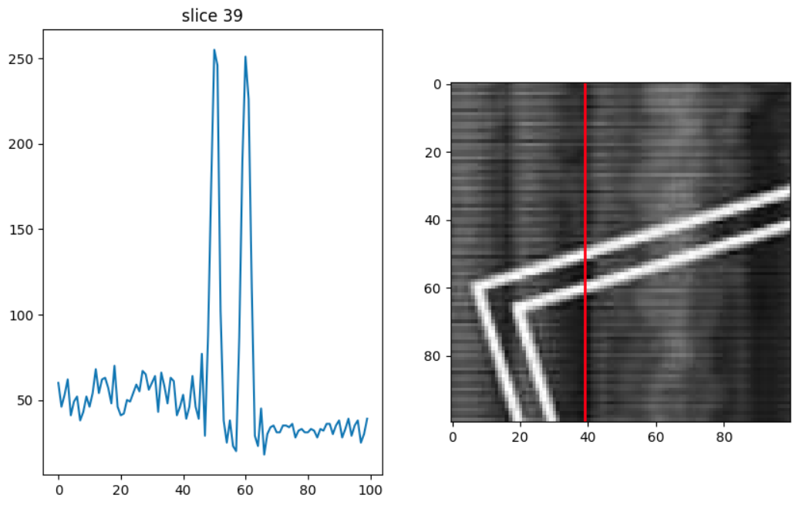

Idea
I just want to see if I can find a clever way to remove a water mark from an image. I am not trying to repro anything that is protected, this is just something interesting to try.
I have a jupyter notebook which takes the image and turns it into grayscale with Open CV. The grayscale is a single array with the dims of the original image. I can display that with jupyter.
I manually identified a part of the image with a good clear piece of water mark in it. So I created a smaller patch array of just this area. My notebook then draws a vertical line on this patch and plots the values of the pixels along this line as a normal timeseries plot. Animating this process for all of the slices of image gives a nice animated plot of the intensity of the pixels along that line.
The image here shows a single example.

The intensity plot on the left shows 2 nice high peaks for the intersections of the watermark. Next up I am going to see if I can automatically find these pixels in the image.